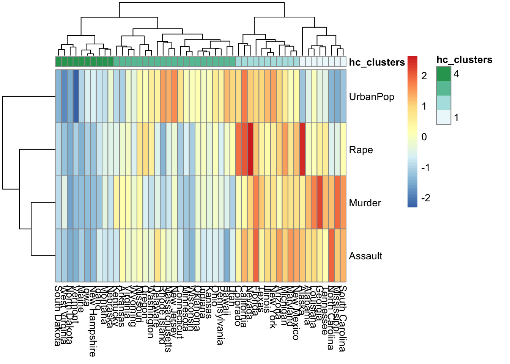

Unsupervised machine learning
Unsupervised Learning
- Principal component analysis (PCA)
- K-mean clustering
- Hierchical clustering
- PCA
- data visualization
- preprocessing for high-dimensional data
- clustering
- subgrouping of predictors or observations which may provide valuable insignts on the data
PCA
- the first principal component
- 변수들의 정규화된 (normalized) 선형결합 (가장 큰 분산을 가지는, 즉 관측치가 가장 많이 변화되는 변수공간의 방향)
\[Z_1 = \phi_{11}X_1 + \phi_{21}X_2 + ... + \phi_{p1}X_p\]
\[\sum_{j=1}^p \phi^2_{j1} = 1\]
loading vector (length=p)
\[\phi_1 = (\phi_{11}, \phi_{21},,,\phi_{p1})^T\]
principal component scores (length=n) 각 관측치의 수치 값을 principal component로 변환한 점수 값
해당 principal component별로 있음
예를 들어, 첫번째 principal component에 대한 각 관측치의 principal component scores 값은 아래와 같이 표현함
\[(z_{11}, z_{21},,, z_{n1})\]
- the second principal component
- 첫번째 주성분과 상관되지 않은 (uncorrelated, orthogonal) \(X_1, X_2,,, X_p\) 의 모든 선형결합 중에서 분산을 최대로 하는 선형결합
- 변수 스케일링
- 스케일링되지 않은 변수에 PCA 를 수행하면 단순히 분산이 큰 변수에 의해 주성분벡터가 결정됨
states = row.names(USArrests)
states # 50 states in USA
## [1] "Alabama" "Alaska" "Arizona" "Arkansas"
## [5] "California" "Colorado" "Connecticut" "Delaware"
## [9] "Florida" "Georgia" "Hawaii" "Idaho"
## [13] "Illinois" "Indiana" "Iowa" "Kansas"
## [17] "Kentucky" "Louisiana" "Maine" "Maryland"
## [21] "Massachusetts" "Michigan" "Minnesota" "Mississippi"
## [25] "Missouri" "Montana" "Nebraska" "Nevada"
## [29] "New Hampshire" "New Jersey" "New Mexico" "New York"
## [33] "North Carolina" "North Dakota" "Ohio" "Oklahoma"
## [37] "Oregon" "Pennsylvania" "Rhode Island" "South Carolina"
## [41] "South Dakota" "Tennessee" "Texas" "Utah"
## [45] "Vermont" "Virginia" "Washington" "West Virginia"
## [49] "Wisconsin" "Wyoming"names(USArrests)
## [1] "Murder" "Assault" "UrbanPop" "Rape"summary(USArrests)
## Murder Assault UrbanPop Rape
## Min. : 0.800 Min. : 45.0 Min. :32.00 Min. : 7.30
## 1st Qu.: 4.075 1st Qu.:109.0 1st Qu.:54.50 1st Qu.:15.07
## Median : 7.250 Median :159.0 Median :66.00 Median :20.10
## Mean : 7.788 Mean :170.8 Mean :65.54 Mean :21.23
## 3rd Qu.:11.250 3rd Qu.:249.0 3rd Qu.:77.75 3rd Qu.:26.18
## Max. :17.400 Max. :337.0 Max. :91.00 Max. :46.00apply(USArrests, 2, var) # column-wise
## Murder Assault UrbanPop Rape
## 18.97047 6945.16571 209.51878 87.72916pr.out = prcomp(USArrests, scale = TRUE)
names(pr.out)
## [1] "sdev" "rotation" "center" "scale" "x"
pr.out$rotation # loading vectors
## PC1 PC2 PC3 PC4
## Murder -0.5358995 0.4181809 -0.3412327 0.64922780
## Assault -0.5831836 0.1879856 -0.2681484 -0.74340748
## UrbanPop -0.2781909 -0.8728062 -0.3780158 0.13387773
## Rape -0.5434321 -0.1673186 0.8177779 0.08902432
head(pr.out$x) # pc scores
## PC1 PC2 PC3 PC4
## Alabama -0.9756604 1.1220012 -0.43980366 0.154696581
## Alaska -1.9305379 1.0624269 2.01950027 -0.434175454
## Arizona -1.7454429 -0.7384595 0.05423025 -0.826264240
## Arkansas 0.1399989 1.1085423 0.11342217 -0.180973554
## California -2.4986128 -1.5274267 0.59254100 -0.338559240
## Colorado -1.4993407 -0.9776297 1.08400162 0.001450164biplot(pr.out)
pr.out$rotation = -pr.out$rotation # loading vectors
pr.out$x = -pr.out$x # pc scores
biplot(pr.out, scale = 0) 
summary(pr.out)
## Importance of components:
## PC1 PC2 PC3 PC4
## Standard deviation 1.5749 0.9949 0.59713 0.41645
## Proportion of Variance 0.6201 0.2474 0.08914 0.04336
## Cumulative Proportion 0.6201 0.8675 0.95664 1.00000
pr.var = pr.out$sdev^2
pve = pr.var/sum(pr.var)
plot(pve, xlab = "Principal component", ylab = "Proportion of Variance Explained", type = "b") # scree plot 
Another example for PCA
library(ISLR) # NCI60 data in this package class(NCI60) # NCI60: 64개 암세포주에 대한 6830개의 유전자 발현 관측치
## [1] "list"
nci.labs = NCI60$labs
table(nci.labs) # 14개 유형의 암세포주
## nci.labs
## BREAST CNS COLON K562A-repro K562B-repro LEUKEMIA
## 7 5 7 1 1 6
## MCF7A-repro MCF7D-repro MELANOMA NSCLC OVARIAN PROSTATE
## 1 1 8 9 6 2
## RENAL UNKNOWN
## 9 1nci.data = NCI60$data
dim(nci.data)
## [1] 64 6830nci_pc_out = prcomp(nci.data, scale = TRUE) library(ggplot2)
pc12scores = nci_pc_out$x[,c("PC1", "PC2")]
df = data.frame(cell_lines = nci.labs, pc12scores)
ggplot(data = df, aes(x=PC1, y=PC2, col = cell_lines)) + geom_point(size = 3)
summary(pr.out)
## Importance of components:
## PC1 PC2 PC3 PC4
## Standard deviation 1.5749 0.9949 0.59713 0.41645
## Proportion of Variance 0.6201 0.2474 0.08914 0.04336
## Cumulative Proportion 0.6201 0.8675 0.95664 1.00000K-means clustering
n개 관측치들을 K개 클러스터로 분할하는 방법: \(K^n\)
알고리즘 1. 각 관측치에 1에서 K까지의 숫자를 랜덤하게 할당한다. 이것은 관측체에 대한 초기 클러스터 할당으로 작용한다. 2. 클러스터 할당이 변하지 않을 때까지 다음을 반복한다. + 2-1. 클러스터 각각에 대해 클러스터 무게중심을 계산한다.
+ 2-2. 각 관측치와 각 클러스터의 무게중심 간의 거리를 계산한다.
+ 2-3. 무게 중심이 가장 가까운 클러스터로 각 관측치를 새롭게 할당한다.
*주의
K 를 선택하는 것은 전혀 단순한 문제가 아니다.
Hierachical clustering
예를 들어 두 개의 관측치가 서로 유사하다는 것을 어떻게 결정할지 생각해보자. 유사성의 척도가 필요한데, 이를 위해 우리는 거리를 계산한다.
유사성의 척도(거리)
euclidean distance
\[d_{euc}(x,y) = \sqrt{\sum_{i=1}^n(x_i - y_i)^2}\]manhattan distance
\[d_{man}(x,y) = \sum_{i=1}^n |{(x_i - y_i)|}\]- pearson correlation distance
\[d_{cor}(x, y) = 1 - \frac{\sum\limits_{i=1}^n (x_i - \bar{x})(y_i - \bar{y})}{\sqrt{\sum\limits_{i=1}^n(x_i - \bar{x})^2 \sum\limits_{i=1}^n(y_i -\bar{y})^2}}\]
correlation distance 는 관측치들의 크기보다는 그들의 모양(프로파일)에 중점을 둔다.
스케일링: 관측치간의 유사성을 계산하기 전에 각 변수에 주어진 중요도를 동일하게 만들기 위해서 표준편차가 1이 되도록 한다. 이것은 k-mean clustering 에서도 동일하게 적용된다.
알고리즘(aggolomerative hierachical clustering의 경우)
1. n개 관측치에서 모든 쌍별로 비유사성의 척도(예를 들어, 유클리드 거리)를 계산한다. 각 관측치 자체를 하나의 클러스터로 취급한다.
2. 모든 클러스터들간의 쌍별 거리를 계산하여, 가장 거리가 작은(즉, 가장 유사한) 클러스터 쌍을 융합한다. 3. 위에서 융합된 새로운 클러스터를 포함하여, 다시 2번 과정을 반복한다.
만약, 클러스터가 두 개 이상의 관측치들을 포함하는 경우, 클러스터 사이의 비유사성을 어떻게 정의할 것인가?
linkage
- complete linkage
클러스터 간 거리의 최대치
- average linkage
클러스터 간 거리의 평균치
- single linkage
클러스터 간 거리의 최소치 - centroid linkage
클러스터 간 무게중심사이의 거리
complete, average linkage 가 좀 더 균형잡힌 클러스터들을 제공하는 경향이 있다.
nci_scaled = scale(nci.data) # center and scale are TRUE in default dist = dist(nci_scaled)
hclust.complete = hclust(dist, method = "complete")
plot(hclust.complete, labels = nci.labs, main = "complete linkage")
hc.clusters = cutree(hclust.complete, 5)
table(hc.clusters, nci.labs)
## nci.labs
## hc.clusters BREAST CNS COLON K562A-repro K562B-repro LEUKEMIA MCF7A-repro
## 1 0 3 2 0 0 0 0
## 2 3 2 0 0 0 0 0
## 3 0 0 0 1 1 6 0
## 4 2 0 5 0 0 0 1
## 5 2 0 0 0 0 0 0
## nci.labs
## hc.clusters MCF7D-repro MELANOMA NSCLC OVARIAN PROSTATE RENAL UNKNOWN
## 1 0 2 7 6 2 8 1
## 2 0 0 1 0 0 1 0
## 3 0 0 0 0 0 0 0
## 4 1 0 0 0 0 0 0
## 5 0 6 1 0 0 0 0
abline(h=135, col="red")
set.seed(2)
km.out = kmeans(nci_scaled, centers = 5, nstart = 20)
km.clusters = km.out$cluster
table(km.clusters, hc.clusters)
## hc.clusters
## km.clusters 1 2 3 4 5
## 1 1 0 0 0 8
## 2 0 0 8 0 0
## 3 20 7 0 0 0
## 4 10 0 0 5 1
## 5 0 0 0 4 0clustering based on principal components
hierchical clustering based on the first five principal components
nci_pc_dist = dist(nci_pc_out$x[,1:5])
hc_pc_out = hclust(nci_pc_dist)
plot(hc_pc_out, labels = nci.labs, main = "Hier. Clust. on First Five Score Vectors")hc_pc_clusters = cutree(hc_pc_out, 4)
table(hc_pc_clusters, nci.labs)
## nci.labs
## hc_pc_clusters BREAST CNS COLON K562A-repro K562B-repro LEUKEMIA
## 1 0 2 7 0 0 2
## 2 5 3 0 0 0 0
## 3 0 0 0 1 1 4
## 4 2 0 0 0 0 0
## nci.labs
## hc_pc_clusters MCF7A-repro MCF7D-repro MELANOMA NSCLC OVARIAN PROSTATE
## 1 0 0 1 8 5 2
## 2 0 0 7 1 1 0
## 3 0 0 0 0 0 0
## 4 1 1 0 0 0 0
## nci.labs
## hc_pc_clusters RENAL UNKNOWN
## 1 7 0
## 2 2 1
## 3 0 0
## 4 0 0set.seed(3)
nci_pc_scaled = scale(nci_pc_out$x[,1:5])
km_pc_out = kmeans(nci_pc_scaled, 4, nstart = 20)
table(km_pc_out$cluster, hc_pc_clusters)
## hc_pc_clusters
## 1 2 3 4
## 1 0 9 0 0
## 2 2 0 6 0
## 3 32 11 0 0
## 4 0 0 0 4Heatmap
df_scaled = scale(USArrests)
df_dist = dist(df_scaled) # row-wise distance matrix
hc_out = hclust(df_dist, method = "complete")
plot(hc_out)
hc_clusters = cutree(hc_out, 4)load package
library(pheatmap)mat = as.matrix(t(df_scaled))
apply(mat, 1, sd)
## Murder Assault UrbanPop Rape
## 1 1 1 1pheatmap(mat,
cluster_rows = T,
# cellheight = 20,
annotation_col = data.frame(hc_clusters))